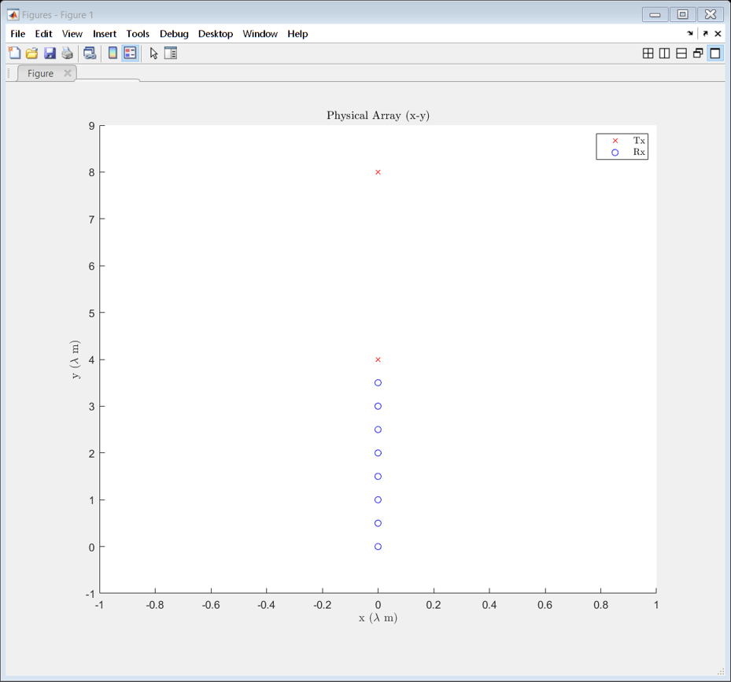
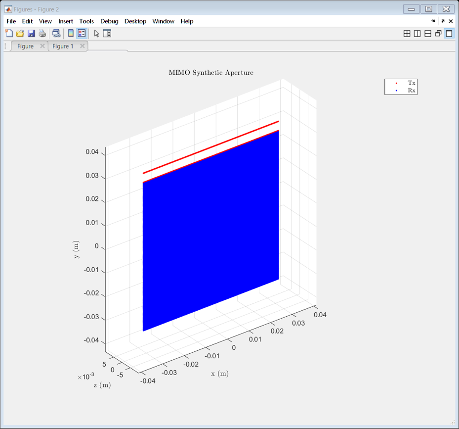
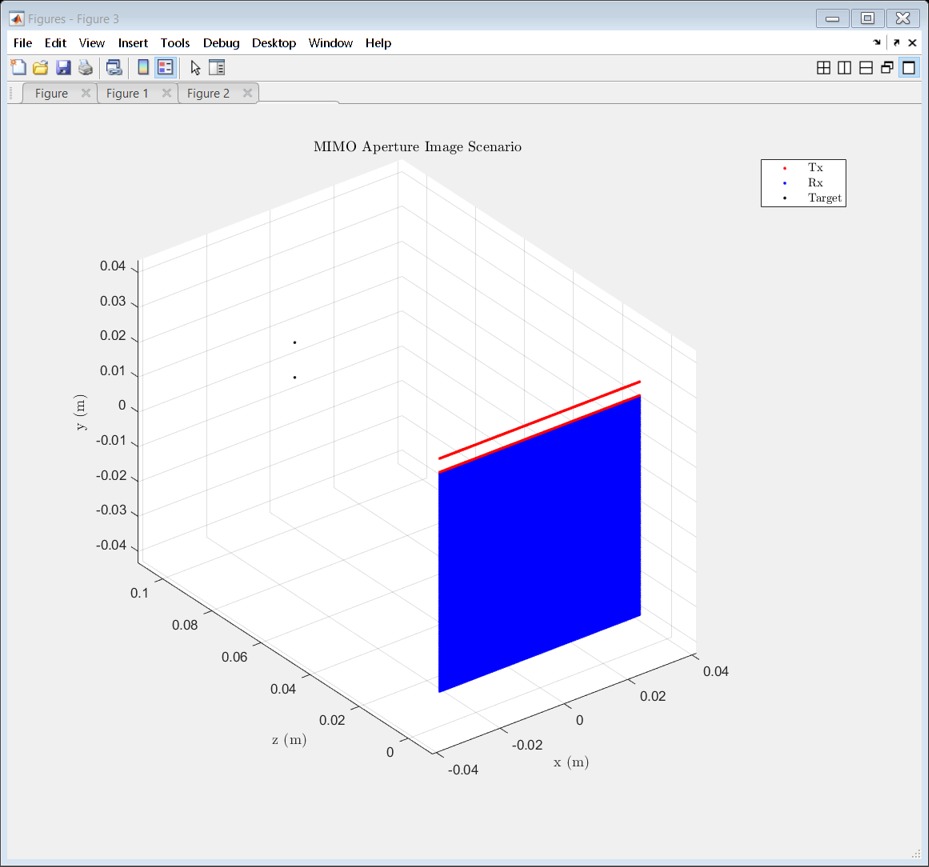
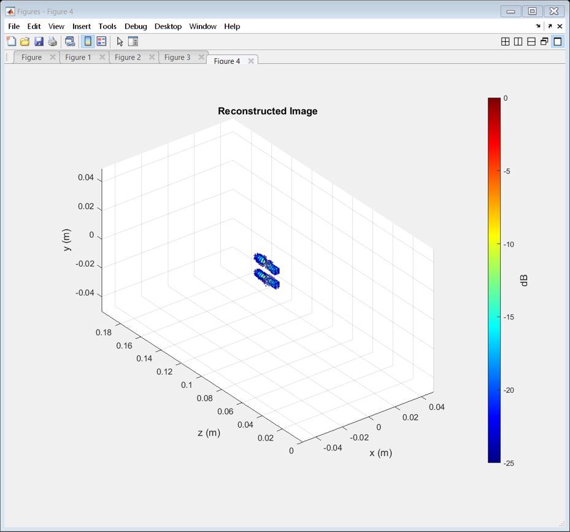
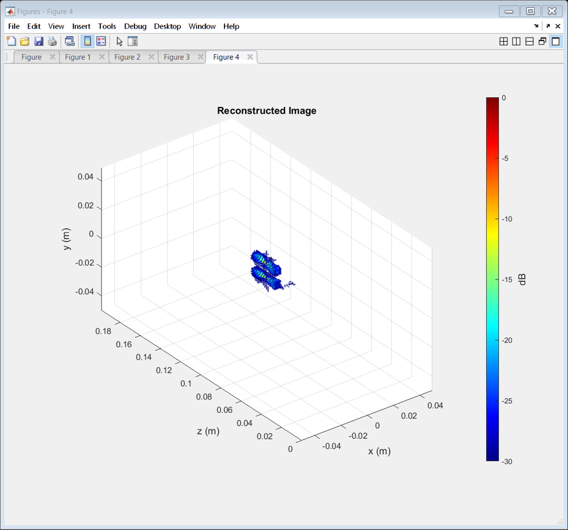

Contents
- Include Necessary Directories
- Create the Objects
- Set Waveform Parameters
- Compute the Waveform Parameters
- Set Antenna Array Properties
- Set Scanner Parameters
- Set Target Parameters
- Compute the Beat Signal
- Set Image Reconstruction Parameters and Create sarImage Object
- Reconstruct the Image
- Display the Image with Different Parameters
% AntennaArray_demo - A short demonstration of the THzAntennaArray class % Copyright (C) 2021 Josiah W. Smith % % This program is free software: you can redistribute it and/or modify % it under the terms of the GNU General Public License as published by % the Free Software Foundation, either version 3 of the License, or % (at your option) any later version. % % This program is distributed in the hope that it will be useful, % but WITHOUT ANY WARRANTY; without even the implied warranty of % MERCHANTABILITY or FITNESS FOR A PARTICULAR PURPOSE. See the % GNU General Public License for more details.
Include Necessary Directories
addpath(genpath("../"))
Create the Objects
wav = THzWaveformParameters(); ant = THzAntennaArray(wav); scanner = THzScanner(ant); target = THzTarget(wav,ant,scanner); im = THzImageReconstruction(wav,ant,scanner,target);
Set Waveform Parameters
wav.Nk = 50; wav.f0 = 300*1e9; wav.fS = 1000*1e3; wav.fC = 305*1e9; wav.B = 10e9;
Compute the Waveform Parameters
Computes the wavenumber vector etc.
wav.Compute();
Set Antenna Array Properties
ant.isEPC = false; ant.z0_m = 0; % Large MIMO Array ant.tableTx = [ 0 0 4 0 1 0 0 8 0 1]; ant.tableRx = [ 0 0 0 0 1 0 0 0.5 0 1 0 0 1 0 1 0 0 1.5 0 1 0 0 2 0 1 0 0 2.5 0 1 0 0 3 0 1 0 0 3.5 0 1]; ant.Compute(); % Display the Antenna Array ant.Display();
Set Scanner Parameters
scanner.method = "Rectilinear"; scanner.xStep_m = wav.lambda_m/4; scanner.numX = 256; scanner.yStep_m = wav.lambda_m*4; scanner.numY = 16; scanner.Compute(); % Display the Synthetic Array scanner.Display();
Set Target Parameters
target.isAmplitudeFactor = false;
target.tableTarget = [
0 0 0.1 1
0 0.01 0.1 1];
target.png.fileName = 'circle.png';
target.png.xStep_m = 1e-3;
target.png.yStep_m = 1e-3;
target.png.xOffset_m = -0.025;
target.png.yOffset_m = 0.05;
target.png.zOffset_m = 0.25;
target.png.reflectivity = 1;
target.png.downsampleFactor = 4;
target.stl.fileName = 'ar15.stl';
target.stl.zCrop_m = 0.25;
target.stl.xOffset_m = 0;
target.stl.yOffset_m = 0;
target.stl.zOffset_m = 0.25;
target.stl.reflectivity = 1;
target.stl.downsampleFactor = 40;
target.rp.numTargets = 16;
target.rp.xMin_m = -0.03;
target.rp.xMax_m = 0.03;
target.rp.yMin_m = -0.03;
target.rp.yMax_m = 0.03;
target.rp.zMin_m = 0.02;
target.rp.zMax_m = 0.18;
target.rp.ampMin = 0.5;
target.rp.ampMax = 1;
% Which to use
target.isTable = true;
target.isPNG = false;
target.isSTL = false;
target.isRandomPoints = false;
target.Get();
% Display the target
target.Display();
ans =
THzTarget with properties:
isGPU: 1
isLong: 0
numTargets: 2
xyz_m: [2×3 single]
amp: [1 1]
R: []
isAmplitudeFactor: 0
isTable: 1
isPNG: 0
isSTL: 0
isRandomPoints: 0
isGPUVerified: 1
tableTarget: [2×4 double]
png: [1×1 struct]
stl: [1×1 struct]
rp: [1×1 struct]
sarData: []
fig: [1×1 struct]
wav: [1×1 THzWaveformParameters]
ant: [1×1 THzAntennaArray]
scanner: [1×1 THzScanner]
app: [1×1 struct]
isApp: 0
isSilent: 0
 Compute the Beat Signal
target.isGPU = true; target.Compute();
Set Image Reconstruction Parameters and Create sarImage Object
When the parameters of a sarImage object are changed by the user, the object automatically updates itself
im.nFFTx = 512; im.nFFTy = 512; im.nFFTz = 512; im.xMin_m = -0.05; im.xMax_m = 0.05; im.yMin_m = -0.05; im.yMax_m = 0.05; im.zMin_m = 0; im.zMax_m = 0.2; im.numX = 128; im.numY = 128; im.numZ = 128; im.isGPU = false; % im.zSlice_m = 0.1; % Use if reconstructing a 2-D image im.method = "Uniform 2-D SAR 3-D RMA"; im.isMult2Mono = true; im.zRef_m = 0.1;
Reconstruct the Image
im.Compute(); im.Display();
Attempting image reconstruction using Uniform 2-D SAR 3-D RMA method. Successfully image reconstruction using Uniform 2-D SAR 3-D RMA method.
Display the Image with Different Parameters
im.dBMin = -30; im.fontSize = 12; im.Display();